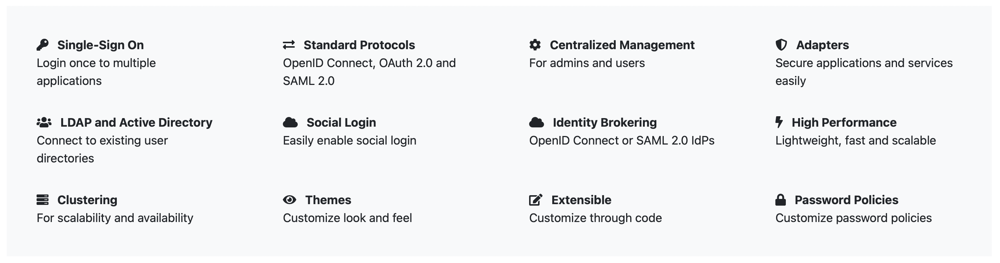

To ensure that users can authenticate themselves in order to use the dashboard, it is incredibly important to have a secure way of logging in users into the system. It is also important to find a system, which is easily understood by users as we do not
want to over-complicate them. Therefore, we considered three different login systems: Keycloak, Microsoft Azure Single Sign On (SSO) and NHS Identity.
At first we are very inclined towards NHS Identity because
it should be intuitive to use by NHS users as the system has already been implemented within the organisation. NHS Identity is actually the current technology for healthcare personnels to authenticate themselves for accessing England's
clinical information systems
[15]. However, after doing some research, we found out that this system may not be able to be used for our platform due to several reasons. Firstly, NHS Identity is mostly
in use in England for NHS England. Therefore, it is quite hard for our dashboard to be used by NHS Wales if we choose to utilise this login system because most clinicians in Wales cannot even access it. Secondly, only staff with a smart
card can authenticate themselves using the NHS Identity. In fact, not all NHS staff have the card mentioned above, hence, this method may not be viable for our self-evaluating platform.
Another option we have in hand is Microsoft
Azure Single Sign On (SSO) system for authentication of users. Using this method, the login process would have been offloaded to Microsoft and would have saved development time. However, we do have a lot of different roles to be created
and assigned to different NHS staff. By using the SSO, we would have to manually assign roles to users and this can be a huge inconvenience for our team.
Keycloak is another option that we have at hand. According to its documentation,
Keycloak is an identity and access management solution (IAM) which has been used by various applications for authentication purposes and it was developped by RedHat, the largest open-source software manufacturer
[16].
It is a secure authentication system with multiple useful features, which will be a good fit to be integrated into our dashboard
[17]. Some of the features include high-performance due its lightweight
nature, Single Sign-On (SSO) for multiple applications and centralised management for users and administrations. In comparison with the Microsoft Azure Single Sign On (SSO), Keycloak has an in-built feature to help assign roles to users
of the system, which is a huge advantage for us. Below is the simplification of all the features, taken from its official website, that shows how Keycloak would make a good candidate for us to manage our login system
[18].
